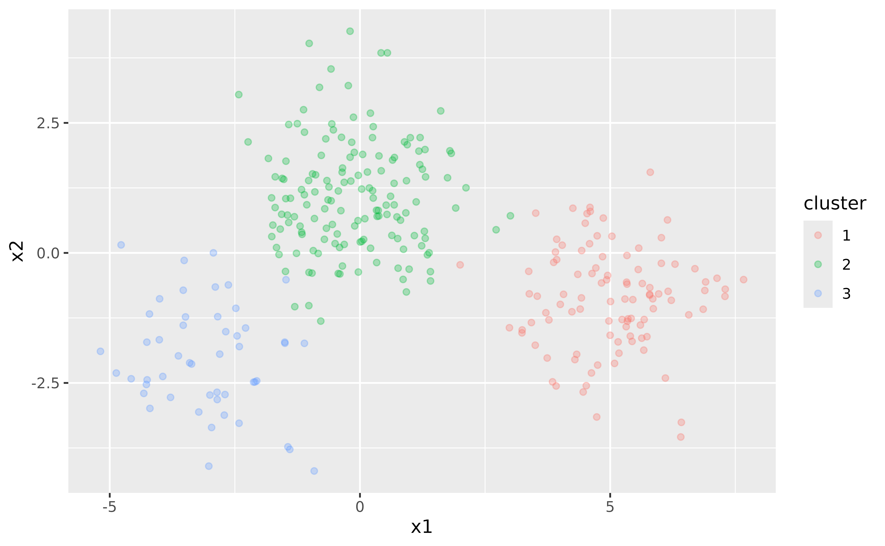
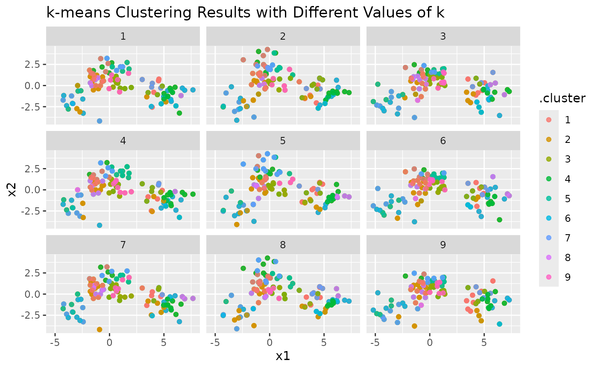
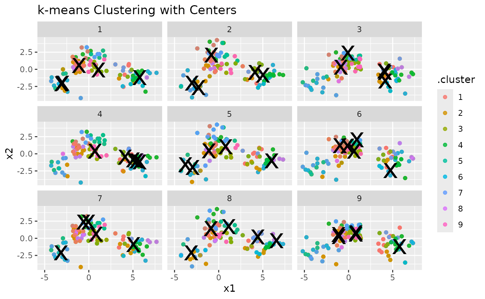
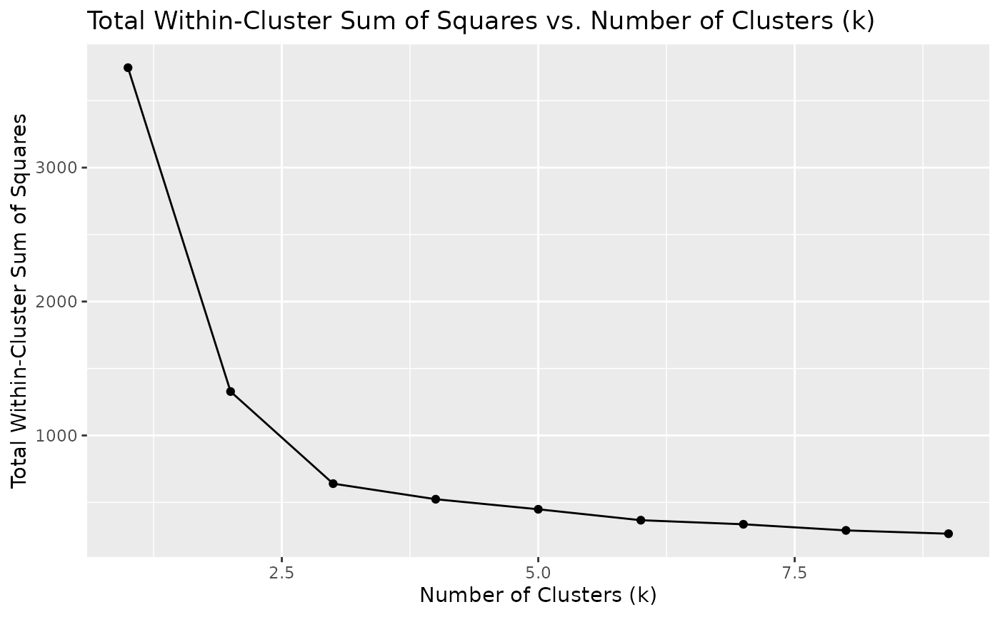

We’ll start by loading the necessary libraries:
Overview
To illustrate the purpose of the G-means algorithm, let’s start with
an adapted k-means clustering example from the tidymodels
website. This example shows the challenge of determining the number of
clusters (k) in clustering analysis. Throughout this
vignette, we will use data.table for data manipulation, and
the custom tidy, augment, and
glance functions for handling model output, inspired by the
broom package functionality.
We begin by generating some random two-dimensional data that naturally forms three clusters. Each cluster’s data comes from a different multivariate Gaussian distribution with unique means:
set.seed(27)
centers <- data.table(
cluster = factor(1:3),
num_points = c(100, 150, 50),
x1 = c(5, 0, -3),
x2 = c(-1, 1, -2)
)
points <- centers[, .(
x1 = rnorm(num_points, mean = x1),
x2 = rnorm(num_points, mean = x2)
), by = cluster]
ggplot(points, aes(x1, x2, color = cluster)) +
geom_point(alpha = 0.3)
In this simple example, we know that there are three clusters. However, in real-world scenarios, the number of clusters is often unknown and must be determined as part of the analysis.
Challenges with k-means
k-means clustering requires specifying the number of clusters,
k, beforehand. To illustrate this, let’s fit a k-means
model with k = 3:
points <- points[, cluster := NULL]
kclust <- kmeans(points, centers = 3)
kclust
#> K-means clustering with 3 clusters of sizes 146, 53, 101
#>
#> Cluster means:
#> x1 x2
#> 1 -0.1277535 1.1366932
#> 2 -2.9430301 -1.9877357
#> 3 5.0156304 -0.8637111
#>
#> Clustering vector:
#> [1] 3 3 3 3 3 3 3 3 3 3 3 3 3 3 3 3 3 3 3 3 3 3 3 3 1 3 3 3 3 3 3 3 3 3 3 3 3
#> [38] 3 3 3 3 3 3 3 3 3 3 3 3 3 3 3 3 3 3 3 3 3 3 3 3 3 3 3 3 3 3 3 3 3 3 3 3 3
#> [75] 3 3 3 3 3 3 3 3 3 3 3 3 3 3 3 3 3 3 3 3 3 3 3 3 3 3 1 1 1 1 1 1 1 1 1 1 1
#> [112] 1 1 1 1 1 1 1 1 1 1 1 1 3 1 1 1 1 1 1 1 1 1 1 1 1 1 1 1 1 2 1 1 1 1 1 1 1
#> [149] 1 1 1 1 1 1 3 1 1 1 1 1 1 1 1 1 1 1 1 1 1 1 1 1 1 1 1 1 1 1 1 1 1 1 1 1 1
#> [186] 1 1 1 1 1 1 1 1 1 1 1 1 1 1 1 1 1 1 1 1 1 1 1 1 1 1 1 1 1 1 1 1 1 1 1 1 1
#> [223] 1 1 1 1 1 1 1 1 1 1 1 1 1 1 2 1 1 1 1 1 1 1 2 1 1 1 1 1 2 2 2 2 2 2 2 2 2
#> [260] 2 2 2 2 2 2 2 2 2 2 2 2 2 2 2 2 2 2 2 2 2 2 2 2 2 2 2 2 2 2 2 2 2 2 2 2 2
#> [297] 2 2 2 2
#>
#> Within cluster sum of squares by cluster:
#> [1] 307.3195 119.2575 213.5906
#> (between_SS / total_SS = 82.9 %)
#>
#> Available components:
#>
#> [1] "cluster" "centers" "totss" "withinss" "tot.withinss"
#> [6] "betweenss" "size" "iter" "ifault"Here, we fit the k-means model with the correct number of clusters because we know the true structure of the data. However, this knowledge is often not available in practice.
To explore the effect of different k, we can fit k-means
models with varying numbers of clusters and visualize the results. To
make handling the k-means output easier, we define tidy,
augment, and glance functions that mimic the
functionality of the broom package:
tidy <- function(x, col.names = colnames(x$centers)) {
col.names <- col.names %||% paste0("x", seq_len(ncol(x$centers)))
dt <- as.data.table(x$centers)
setnames(dt, col.names)
dt[, let(
size = x$size,
withinss = x$withinss,
cluster = factor(seq_len(.N))
)]
dt
}
augment <- function(x, data) {
if (inherits(data, "matrix") && is.null(colnames(data))) {
colnames(data) <- paste0("X", seq_len(ncol(data)))
}
dt <- as.data.table(data)
dt[, .cluster := as.factor(x$cluster)]
dt
}
glance <- function(x) {
as.data.table(x[c("totss", "tot.withinss", "betweenss", "iter")])
}Using these helper functions, we can easily extract and manipulate
the results of k-means clustering for different values of
k:
kclusts <- data.table(k = 1:9)
kclusts[, kclust := lapply(k, \(x) kmeans(points, x))]
kclusts[, let(
tidied = lapply(kclust, tidy),
glanced = lapply(kclust, glance),
augmented = lapply(kclust, augment, points)
)]
clusters <- kclusts[, .(k, rbindlist(tidied))]
assignments <- kclusts[, .(k, rbindlist(augmented))]
clusterings <- kclusts[, .(k, rbindlist(glanced))]
p1 <- ggplot(assignments, aes(x = x1, y = x2)) +
geom_point(aes(color = .cluster), alpha = 0.8) +
facet_wrap(~k) +
labs(title = "k-means Clustering Results with Different Values of k")
p1
Visualizing Cluster Centers
To enhance the visualization, let’s add cluster centers:
p2 <- p1 + geom_point(data = clusters, size = 10, shape = "x") +
labs(title = "k-means Clustering with Centers")
p2
Evaluating Clustering Performance
Finally, we can look at how the total within-cluster sum of squares
(WSS) changes with different values of k. This helps us see
how well the data is being clustered as k increases:
ggplot(clusterings, aes(k, tot.withinss)) +
geom_line() +
geom_point() +
labs(
title = "Total Within-Cluster Sum of Squares vs. Number of Clusters (k)",
x = "Number of Clusters (k)",
y = "Total Within-Cluster Sum of Squares"
)
Motivation for G-means
As seen from the plots, choosing the right number of clusters is not straightforward. We could use metrics like WSS to help decide, but these methods can be subjective and prone to error. This is where the G-means algorithm comes in—it automatically determines the number of clusters by assessing the data distribution within each cluster.
By using statistical hypothesis testing (the Anderson-Darling test in our implementation), G-means provides a more robust and automated way to find the “correct” number of clusters. In the next section, we’ll see how to use G-means and explore its benefits over traditional k-means clustering.